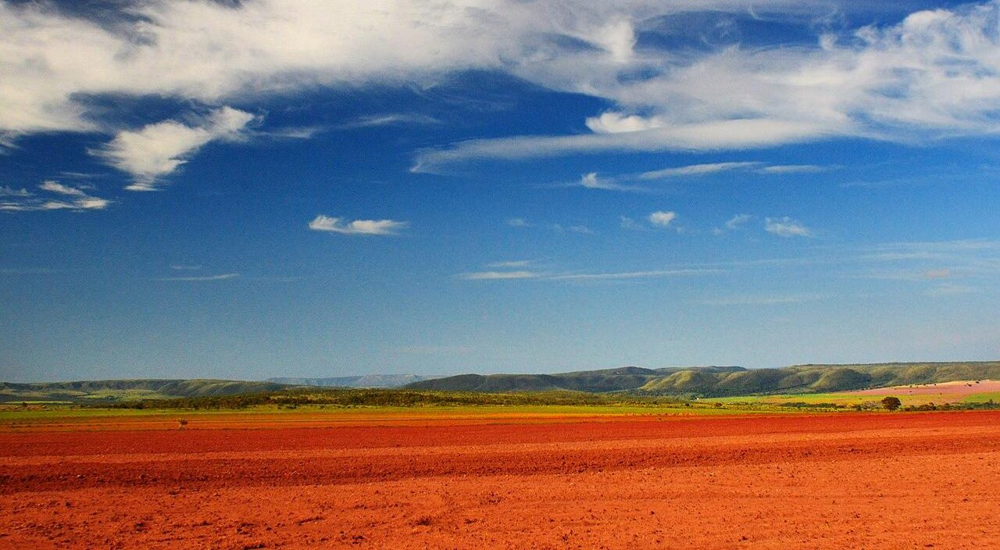

Informação de mercado para quem produz no DF e Entorno
Boletins mensais de preços, relações de troca e dados das cadeias produtivas, preparados por estudantes de Gestão de Agronegócios da UnB.
Boletim de Mercado NEAGRO-DF
ISSN 3086-9153
O Boletim de Mercado NEAGRO-DF é uma publicação mensal, online e de acesso aberto do Núcleo de Estudos sobre o Agronegócio do Distrito Federal (FAV/UnB). Todo mês, as equipes coletam preços de insumos e produtos nas praças do DF e Entorno, calculam as relações de troca entre insumo e produto e explicam o que mudou no mercado. Cada número reúne cadernos por cadeia produtiva: bovinocultura de corte e leite, suinocultura, avicultura de corte e postura, caprinocultura e ovinocultura, e grãos e insumos.
Expediente
- Título
- Boletim de Mercado NEAGRO-DF
- ISSN
- ISSN 3086-9153 (online), atribuído pelo Centro Brasileiro do ISSN (Ibict)
- Editora responsável
- Profa. Dra. Mayra Batista Bitencourt Fagundes (FAV/UnB)
- Corpo editorial
- Coordenação geral: Prof. Dr. Marlon Vinícius Brisola e Profa. Dra. Mayra Batista Bitencourt Fagundes. Coordenadores de área: Tatiana Paiva de Godoy (bovinocultura de corte e leite); André Marinho de Souza Filho e Matias Vicente dos Reis Mangabeiro (suinocultura); Ana Luisa Lopes Batista (avicultura de corte e postura); Jelson Luiz Dick (caprinocultura e ovinocultura); Dilson Thomas Fonseca e Antônio da Costa Ferreira Lima (grãos e insumos)
- Instituição responsável
- Universidade de Brasília (UnB), Faculdade de Agronomia e Medicina Veterinária (FAV), Núcleo de Estudos sobre o Agronegócio do Distrito Federal (NEAGRO-DF). Campus Universitário Darcy Ribeiro, Asa Norte, Brasília, DF, CEP 70910-900, Brasil
- Periodicidade
- Mensal (de outubro de 2023 ao primeiro semestre de 2025, os números foram semanais ou quinzenais)
- Designação
- Volume, número e ano civil. Cada volume corresponde a um ano civil (Vol. 1, 2023; Vol. 2, 2024; Vol. 3, 2025; Vol. 4, 2026); o número indica a ordem sequencial de publicação dentro do volume e recomeça em No. 1 a cada ano. O primeiro número é o Vol. 1, No. 1 (set. 2023). Exemplo: Vol. 4, No. 9 (set. 2026). Cada número reúne os cadernos das cadeias produtivas acompanhadas.
- Suporte e acesso
- Publicação online, em português, de acesso aberto e gratuito, em endereço exclusivo e permanente: neagro-df.github.io/portal-neagro-df/boletim, que reúne o número atual e todos os números anteriores.
- Contato
- Ver a seção Contato.
Relações de troca do mês
Quanto o produtor precisa vender para comprar milho, o principal componente da ração. Quanto menor o índice, maior o poder de compra. O sinal compara o mês com a média dos meses acompanhados pelo núcleo.
Evolução da relação de troca
Resumo do mês
Sinal das relações acompanhadas
Preços no DF, últimos 13 meses
Inteligência de mercado para o agro do DF e Entorno
O NEAGRO-DF acompanha os preços das cadeias produtivas da região, transforma esses números em análise e coloca a informação ao alcance de quem produz, ensina e decide.
Boletim mensal de mercado
Preços, variações e análise das ocorrências do mês em oito cadeias produtivas, com insumos e produtos lado a lado.
Coleta semanal de preços
Levantamento nas principais praças de interesse do DF e Entorno, registrado em planilha padronizada com média automática.
Relações de troca
Quanto produto é preciso vender para comprar milho, farelo de soja ou outros insumos, o termômetro do poder de compra do produtor.
Indicadores e gráficos do mês
Relações de troca, preços do DF e movimentação de animais, publicados aqui no portal em gráficos e atualizados a cada lançamento da equipe.
Seminário on-line mensal
Apresentação aberta dos temas do boletim nas duas primeiras semanas do mês seguinte, com espaço para perguntas.
Indicadores específicos
Indicador de preço da tilápia no DF e Índice de Relação de Troca (IRT) semestral do morango.
Estudos regionais
Dados do agro do DF e da RIDE e o PIB do agronegócio regional pela metodologia Cepea/Esalq, em construção.
Formação de estudantes
Estudantes de Gestão de Agronegócios aprendem na prática a coletar, tratar, interpretar e comunicar dados de mercado.
Cadeias produtivas acompanhadas
Números do DF segundo o IBGE e cotações mais recentesComo o boletim é feito, todo mês
Etapas do fluxo de produção do NEAGRO-DFAs equipes registram os preços nas praças do DF e Entorno.
Cada grupo lança os preços na base do núcleo e escreve o texto sobre as ocorrências do mês.
A coordenação avalia e corrige dados e textos.
A equipe de comunicação diagrama o boletim, que passa por nova revisão.
O boletim vai para o site e é apresentado no seminário on-line.
Competências da equipe
Áreas de atuação dos professores que coordenam o núcleo.
Calculadora de relação de troca
Quanto do seu produto você precisa vender para comprar o insumo? Digite os preços da sua região ou use o exemplo com as cotações mais recentes.
Cotações e indicadores
Câmbio, juros e inflação se atualizam sozinhos. Os indicadores Cepea são lançados pela coordenação toda semana.
| Indicador | Valor | Referência | Variação | Fonte |
|---|
Dólar comercial
Inflação (IPCA 12 meses)
Economia, comércio exterior e mercado mundial
PIB, valor adicionado, comércio exterior e oferta mundial, lidos direto das fontes oficiais (IBGE, MDIC, USDA e Comissão Europeia) a cada atualização do portal. Cada cartão traz o link da fonte e a data da extração.
Agro do DF e da RIDE
Você sabia? Toque no cartão para ver a resposta
Produção, trânsito animal e comércio exterior
Rebanhos e produção por UF
Trânsito de suínos no DF (GTA)
Para onde vão e de onde vêm os suínos
Brasil e Mundo
Como vai a agropecuária no PIB, o PIB do agronegócio, os preços internacionais dos alimentos e as notícias do setor.
Notícias do agro
Siga @neagroans no InstagramMercado internacional
O que acontece lá fora e mexe com o agro brasileiroPrograma de Extensão da FAV/UnB
O NEAGRO-DF organiza os dados das cadeias produtivas do Distrito Federal e Entorno e transforma números em informação útil para quem produz, ensina e decide.
Começou em 2023 como Projeto de Extensão da Faculdade de Agronomia e Medicina Veterinária e tornou-se Programa de Extensão em 2024. Os estudantes de Gestão de Agronegócios aprendem na prática a coletar, tratar e interpretar dados de mercado.
Do que você precisa?
Produtor rural, cooperativa, órgão público, empresa ou estudante: conte qual é a sua demanda. A equipe do NEAGRO-DF analisa o pedido e responde por e-mail, indicando como podemos ajudar.
Como funciona
- Você descreve a demandaPreencha o formulário com o que precisa e para quando.
- A equipe analisaA coordenação avalia o pedido e indica a equipe da cadeia mais adequada.
- Respondemos por e-mailCom a informação, a proposta de trabalho ou a orientação sobre onde encontrar o dado.
Exemplos de demandas
De onde vêm os números
Cada dado do portal tem fonte, endereço de consulta e data de extração. Os automáticos são renovados pelo robô de atualização; os manuais, pela coordenação.
Ver fontes, metodologia e créditos das fotografias
| Dado | Fonte | Endpoint | Extração | Modo |
|---|